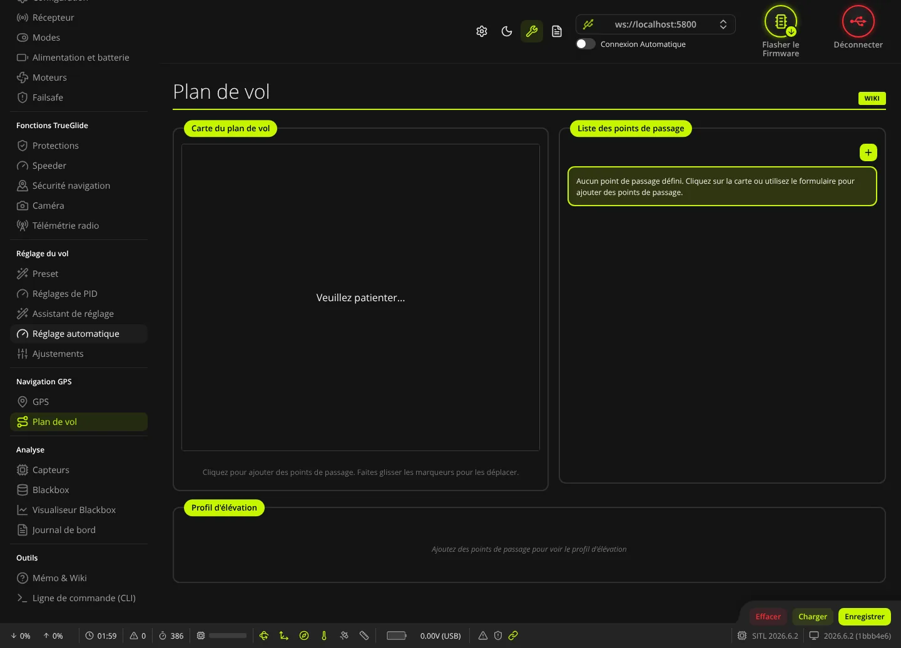
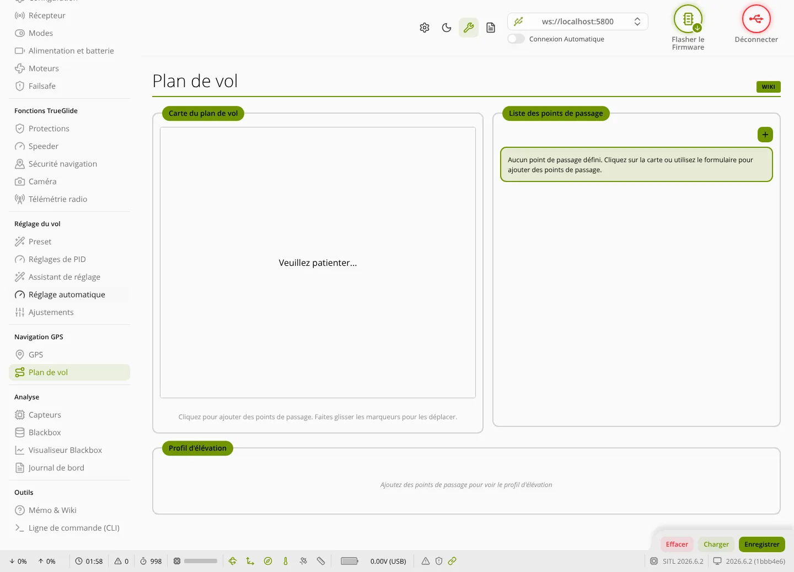

TRUE
TRUEPlan de vol
L'onglet Plan de vol (groupe « Navigation GPS ») sert à préparer une mission GPS : une liste de points de passage posés sur une carte, avec altitude, vitesse et type d'action, puis à l'envoyer au contrôleur de vol des modèles TRUENAV et TRUENAV_LIGHT.


Quand l'onglet est disponible
- Sans carte branchée : l'onglet apparaît dans le menu en Mode Expert (bouton en forme de clé en haut de la fenêtre). On peut préparer un plan et le garder dans le logiciel, mais pas l'envoyer.
- Carte branchée : l'onglet n'apparaît que si le firmware contient le moteur de missions. C'est le cas des modèles TRUENAV et TRUENAV_LIGHT (et du simulateur). Le modèle TRUEGLIDE de base ne l'a pas. Le moteur de missions demande un accéléromètre et ne sert pas aux ailes volantes.
Le plan affiché est toujours gardé dans le logiciel. Les boutons Charger et Enregistrer ne sont actifs que connecté à un firmware qui a le moteur de missions.
Cadre Carte du plan de vol
- Un clic sur la carte ajoute un point de passage à cet endroit. Un marqueur se déplace en le faisant glisser ; un clic simple le sélectionne.
- La carte a besoin d'Internet. Tant qu'elle n'est pas prête, elle affiche « Veuillez patienter... ».
- Pour se centrer, elle demande d'abord votre position au navigateur. Si c'est refusé ou impossible, une fenêtre propose de déduire une position approximative de votre adresse IP par geojs.io, un service tiers : rien n'est envoyé sans votre accord. Sans position, la carte s'ouvre sur Sydney (Australie) : déplacez-la vers votre terrain.
Cadre Liste des points de passage
- Le bouton + ouvre le formulaire Ajouter un point de passage.
- Chaque ligne montre le numéro d'ordre, la position (ou le type pour les points sans position), l'altitude en ft AMSL, la vitesse en nœuds et le type.
- Glisser-déposer une ligne change l'ordre de la mission.
- Le crayon ouvre Modifier le point de passage ; la corbeille supprime le point après confirmation.
Formulaire d'un point de passage
- Type de point de passage : voir le tableau ci-dessous.
- Latitude (−90 à 90°) et Longitude (−180 à 180°), au millionième de degré.
- Altitude en ft AMSL (pieds au-dessus du niveau de la mer, pas au-dessus du sol) : 0 à 50 000. Valeur par défaut : 400 ft. Pensez à ajouter l'altitude du terrain : voir le profil d'élévation plus bas.
- Vitesse en nœuds : 0 à 500, par pas de 0,1. Valeur par défaut : 10 nœuds (environ 5 m/s).
- Durée d'attente (type Attente) ou Durée du délai (type Délai), en minutes : 0 à 60.
- Circuit d'attente (type Attente) : Cercle, En huit ou Orbite.
- Vitesse de lacet en °/s (type Limite de vitesse de lacet) : 0 à 720.
| Type | Position | Champs utilisés |
|---|---|---|
| Survol | oui | position, altitude, vitesse |
| Passage à proximité | oui | position, altitude, vitesse |
| Attente | oui | position, altitude, vitesse, durée d'attente, circuit |
| Atterrissage | oui | position, altitude, vitesse |
| Décollage | oui | position, altitude, vitesse |
| Changer d'altitude | non | altitude ; s'applique au point suivant |
| Délai | non | durée du délai ; s'applique au point suivant |
| Limite de vitesse de lacet | non | vitesse de lacet en °/s ; s'applique au point suivant |
Les trois derniers types n'ont pas de position : ils ne sont pas dessinés sur la carte ni sur le profil d'élévation.
Le firmware garde au plus 30 points de passage (valeur par défaut de sa construction).
Cadre Profil d'élévation
Sans point de passage, il affiche « Ajoutez des points de passage pour voir le profil d'élévation ». Ensuite, en haut : Distance totale, Temps de vol (calculé avec les vitesses saisies : c'est une estimation), Altitude min, Altitude max, Élév. sol (moyenne) et Élév. sol max, en pieds. Le graphique montre l'altitude de la mission au-dessus du relief, avec les lignes « Sol moy. » et « Sol max ». L'altitude du sol est demandée au service en ligne open-elevation.com : sans Internet, elle n'est pas disponible. Vérifiez que la mission reste bien au-dessus du sol et des obstacles sur tout le trajet.
Boutons du bas
- Effacer : supprime tous les points après confirmation (« Effacer le plan de vol »). Connecté à un firmware avec le moteur de missions, la mission est aussi effacée dans le contrôleur de vol et sauvegardée.
- Charger : lit la mission enregistrée dans le contrôleur de vol (commande CLI
waypoint list) et remplace le plan affiché. - Enregistrer : efface la mission du contrôleur (
waypoint clear), envoie chaque point (waypoint insert), puis sauvegarde (save). Les pieds et les nœuds sont convertis en centimètres et en cm/s pour le firmware.
À l'ouverture de l'onglet, carte branchée : si le plan du logiciel est vide, la mission du contrôleur est chargée. Sinon, une fenêtre demande s'il faut la charger (Charger depuis le FC) ou garder le plan actuel (Conserver l'actuel), pour pouvoir l'enregistrer ensuite dans le contrôleur.
Voler la mission
- Enregistrez la mission dans le contrôleur, puis relisez-la avec Charger pour vérifier.
- Dans l'onglet Modes, mettez le mode AUTOPILOT sur un interrupteur. Avec les modèles TRUENAV, rien ne change en vol tant qu'aucun mode de navigation n'est sur un interrupteur.
- Vérifiez le GPS dans l'onglet GPS (accroche stable) et le retour en cas de perte radio dans l'onglet Failsafe.
- Premier essai : terrain dégagé, mission courte et basse vitesse, le pouce sur l'interrupteur pour reprendre la main.